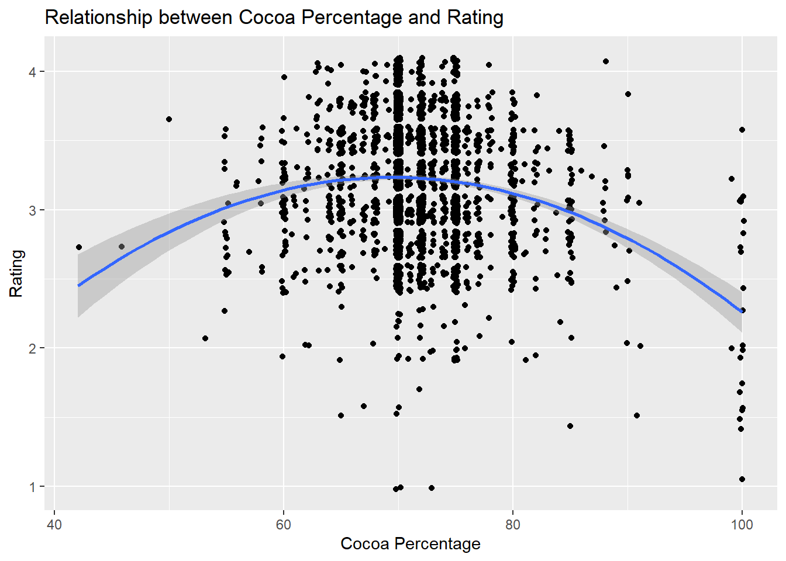

Goal: Examine the tidy tuesday dataset on chocolate bars Product: Finding the best model for predicting chocolate bars ratings based on their cocoa percentage. Data: Chocolate Bar Ratings Interpretation: A quadratic model fit the data best. This model shows that the highest rated chocolate bars did not have the highest or lowest cocoa percentage, but had a medium percentage of cocoa.
library(tidyverse)
library(tidyr)
library(tidytuesdayR)
library(tidymodels)
library(openintro)
library(broom)tuesdata <- tidytuesdayR::tt_load('2022-01-18')## --- Compiling #TidyTuesday Information for 2022-01-18 ----## --- There is 1 file available ---## --- Starting Download ---##
## Downloading file 1 of 1: `chocolate.csv`## --- Download complete ---chocolate <- tuesdata$chocolateFirst, convert the cocoa percentage column to numbers without the percent sign. Since this column is a string, we’ll want to convert it to numeric.
chocolate$cocoa_percent<-gsub("%$","",chocolate$cocoa_percent)
chocolate<-transform(chocolate, cocoa_percent = as.numeric(cocoa_percent))
class(chocolate$cocoa_percent)## [1] "numeric"Based on my own experience, as the cocoa_percentage increases, the chocolate tastes worse – too bitter. Let’s see if this theory holds true with the raw data and in the taste of others.
ggplot(chocolate, aes(y = rating, x=cocoa_percent))+
geom_point()+
stat_smooth(method="lm")+
labs(title="Relationship between Cocoa Percentage and Rating", y="Rating", x="Cocoa Percentage")## `geom_smooth()` using formula = 'y ~ x'linear_reg() %>%
set_engine("lm") %>%
fit(rating ~ cocoa_percent, data = chocolate) %>%
tidy()## # A tibble: 2 × 5
## term estimate std.error statistic p.value
## <chr> <dbl> <dbl> <dbl> <dbl>
## 1 (Intercept) 4.03 0.112 35.9 5.83e-229
## 2 cocoa_percent -0.0116 0.00156 -7.46 1.22e- 13summary(lm(rating ~ cocoa_percent, data=chocolate))##
## Call:
## lm(formula = rating ~ cocoa_percent, data = chocolate)
##
## Residuals:
## Min 1Q Median 3Q Max
## -2.21541 -0.23867 0.03459 0.28459 0.99393
##
## Coefficients:
## Estimate Std. Error t value Pr(>|t|)
## (Intercept) 4.02953 0.11209 35.949 < 2e-16 ***
## cocoa_percent -0.01163 0.00156 -7.456 1.22e-13 ***
## ---
## Signif. codes: 0 '***' 0.001 '**' 0.01 '*' 0.05 '.' 0.1 ' ' 1
##
## Residual standard error: 0.4406 on 2528 degrees of freedom
## Multiple R-squared: 0.02152, Adjusted R-squared: 0.02113
## F-statistic: 55.59 on 1 and 2528 DF, p-value: 1.218e-13Using a linear model, the intercept isn’t meaningful because no chocolate bar would have 0% of cocoa. Generally, if we increase cocoa percentage, rating of the chocolate decreases. The adjusted r-squared suggests that 2.1% of the variation in rating is accounted for by the cocoa percent.
Taking a closer look at the scatterplot, it seems a quadratic regression model might fit the data better than a linear regression model. Let’s explore that.
#create percent squared variable
chocolate$cocoa_percent2<-chocolate$cocoa_percent^2
#fit quad regression model
quad_model <- lm(rating ~ cocoa_percent + cocoa_percent2, data=chocolate)
#view model
summary(quad_model)##
## Call:
## lm(formula = rating ~ cocoa_percent + cocoa_percent2, data = chocolate)
##
## Residuals:
## Min 1Q Median 3Q Max
## -2.23402 -0.23402 0.01598 0.27251 1.24133
##
## Coefficients:
## Estimate Std. Error t value Pr(>|t|)
## (Intercept) -1.8018358 0.5806716 -3.103 0.00194 **
## cocoa_percent 0.1450576 0.0153968 9.421 < 2e-16 ***
## cocoa_percent2 -0.0010445 0.0001021 -10.227 < 2e-16 ***
## ---
## Signif. codes: 0 '***' 0.001 '**' 0.01 '*' 0.05 '.' 0.1 ' ' 1
##
## Residual standard error: 0.4318 on 2527 degrees of freedom
## Multiple R-squared: 0.06041, Adjusted R-squared: 0.05966
## F-statistic: 81.23 on 2 and 2527 DF, p-value: < 2.2e-16This new model explains 6% of the total variance in chocolate bar ratings; and therefore, is a better model than the previous one.
I’m attempting to plot the quadratic regression line but it isn’t working using the code professor google told me to use, so I’m going to try something else.
#create sequence of pct values
pctValues <- seq(40, 100, 0.1)
#create list of predicted happines levels using quadratic model
#rating_predict <- predict(quad_model,list(pcts=pctValues, pcts2=pctValues^2)) #
#create scatterplot of original data values
#plot(chocolate$cocoa_percent, chocolate$rating, pch=16)
#add predicted lines based on quadratic regression model
#lines(pctValues, rating_predict, col='blue')Trying another method to plot the quadratic regression line. Looks like it worked!
ggplot(chocolate, aes(y = rating, x=cocoa_percent))+
geom_jitter()+
stat_smooth(method="lm",
formula = y ~ poly(x, 2))+
labs(title="Relationship between Cocoa Percentage and Rating", y="Rating", x="Cocoa Percentage")
I wanted to test this other way of fitting a quadratic model to make sure I got the same results as the method I used previously.
#fit quad regression model
quad_model2 <- lm(rating ~ poly(cocoa_percent, 2), data=chocolate)
#view model
summary(quad_model2)##
## Call:
## lm(formula = rating ~ poly(cocoa_percent, 2), data = chocolate)
##
## Residuals:
## Min 1Q Median 3Q Max
## -2.23402 -0.23402 0.01598 0.27251 1.24133
##
## Coefficients:
## Estimate Std. Error t value Pr(>|t|)
## (Intercept) 3.196344 0.008585 372.305 < 2e-16 ***
## poly(cocoa_percent, 2)1 -3.285089 0.431832 -7.607 3.92e-14 ***
## poly(cocoa_percent, 2)2 -4.416417 0.431832 -10.227 < 2e-16 ***
## ---
## Signif. codes: 0 '***' 0.001 '**' 0.01 '*' 0.05 '.' 0.1 ' ' 1
##
## Residual standard error: 0.4318 on 2527 degrees of freedom
## Multiple R-squared: 0.06041, Adjusted R-squared: 0.05966
## F-statistic: 81.23 on 2 and 2527 DF, p-value: < 2.2e-16